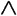
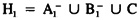
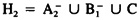
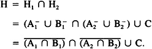
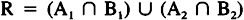
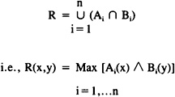
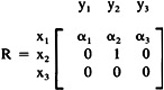
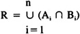
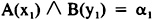

by Abraham Kandel
CRC Press, CRC Press LLC
ISBN: 084934297x Pub Date: 11/01/91
|
|
Fuzzy Expert Systems
by Abraham Kandel CRC Press, CRC Press LLC ISBN: 084934297x Pub Date: 11/01/91 |
| Previous | Table of Contents | Next |
Thus, we see that any rule involving a pair of fixed antecedent requirements can be represented as a relational rule where R(x,y) = A(x)  B(y). We note in the case when A = X and B = Y we get R = X × Y which is the most tolerant relationship. On the other hand, if A and B are singletons:
A = {x*}
B = {y*}
then R is the most specific tolerance relation:
R = {(x*,y*)}
Next consider the situation in which we have two fixed antecedent rules implying the same conclusion:
P1 if V is A1 and W is B1 then U is C
P2 if V is A2 and W is B2 then U is C
Then P1 induces:

and P2 induces:

The combined effect of these two rules is

We can effectively represent this as:
If (V,W) is R then U is C
where

More generally, if we have a collection of n rules, implying the same consequent, of the form:
If V is A1 and W is B1 then U is C
we can represent this in one relational rule:
If (V,W) is R then U is C
where

Thus we see that the use of relational type rules allows us to capture in one rule the information contained in a whole family of fixed antecedent rules inferring the same implication. In many cases, when the knowledge about a situation is expressed by an expert in terms of a relational rule, such as “if V is close to W then U is B”; this rule is in reality the expert summarization of a whole family of fixed rules. In many regards this idea of using relational type rules to capture this multiplicity of information typifies the approach of experts in that these rules characterize heuristics useful to analyzing complex situations.
While any combination of normal fixed rules can be represented in terms of a relational type rule, it is not always the case that a normal relational type rule can be expressed in terms of fixed type rules.
Consider the relation:

so that 1 > α1 > α2 > α3 > 0.
We desire to find a family of Ais and Bis, each of which is normal, so that:

In order to capture this R we need at least one pair A, B, so that

Then either A(x1) = α1 or B(y1) = α1. Assume A(x1) = α1 then B(y2) ≥ α1. Since each A must normal, then either A(x2) = 1 or A(x3) = 1; but if A(x2) 1, then R(x2,y1) ≥ A(x2)  B(y1) ≥ α1 > 0. Similarly for A(x3) = 1. Assume B(y1) = α1 then A(x1) ≥ α1. Since B must be normal, either B(y2) or B(y3) = 1. If B(x2) = 1, then R(x1,y2) ≥ A(x1) B(y2) ≥ α1 > α2; similarly for B(x3) = 1. Thus there exist no A and B which can give us R(x1,y1) and, hence, we cannot model R.
B(y1) ≥ α1 > 0. Similarly for A(x3) = 1. Assume B(y1) = α1 then A(x1) ≥ α1. Since B must be normal, either B(y2) or B(y3) = 1. If B(x2) = 1, then R(x1,y2) ≥ A(x1) B(y2) ≥ α1 > α2; similarly for B(x3) = 1. Thus there exist no A and B which can give us R(x1,y1) and, hence, we cannot model R.
Thus we see that the use of relational antecedents allows us to capture a wider range of functions than using a set of fixed rules. On the other hand, there are classes of Rs that can always be modeled as conjunctions of fixed rules.
Theorem. If each x has at least one y such that R(x,y) = 1, then there exists a collection of rules of the form:
If V is Ai and W is Bi then C
that is equivalent to:
If (V,W) is R then C
Proof. Consider Ai = {1/xi} and Bi = {1/y*, Ri,j/yj} where y* is such that R(Xi, Y*) = 1. Then Ai ∩ Bi = {1/(xi,y*), Ri,j/(xi,yj)}
Research is supported in part by NSF grants IST8503841 and DCR8513044.
| Previous | Table of Contents | Next |